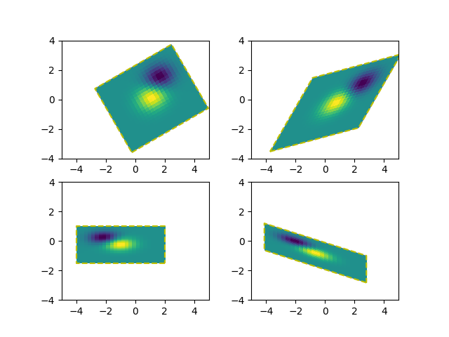

Version 2.2.0
For the backends that support draw_image with optional affine transform (e.g., agg, ps backend), the image of the output should have its boundary match the dashed yellow rectangle.
import numpy as np
import matplotlib.pyplot as plt
import matplotlib.transforms as mtransforms
def get_image():
delta = 0.25
x = y = np.arange(-3.0, 3.0, delta)
X, Y = np.meshgrid(x, y)
Z1 = np.exp(-X**2 - Y**2)
Z2 = np.exp(-(X - 1)**2 - (Y - 1)**2)
Z = (Z1 - Z2)
return Z
def do_plot(ax, Z, transform):
im = ax.imshow(Z, interpolation='none',
origin='lower',
extent=[-2, 4, -3, 2], clip_on=True)
trans_data = transform + ax.transData
im.set_transform(trans_data)
# display intended extent of the image
x1, x2, y1, y2 = im.get_extent()
ax.plot([x1, x2, x2, x1, x1], [y1, y1, y2, y2, y1], "y--",
transform=trans_data)
ax.set_xlim(-5, 5)
ax.set_ylim(-4, 4)
# prepare image and figure
fig, ((ax1, ax2), (ax3, ax4)) = plt.subplots(2, 2)
Z = get_image()
# image rotation
do_plot(ax1, Z, mtransforms.Affine2D().rotate_deg(30))
# image skew
do_plot(ax2, Z, mtransforms.Affine2D().skew_deg(30, 15))
# scale and reflection
do_plot(ax3, Z, mtransforms.Affine2D().scale(-1, .5))
# everything and a translation
do_plot(ax4, Z, mtransforms.Affine2D().
rotate_deg(30).skew_deg(30, 15).scale(-1, .5).translate(.5, -1))
plt.show()